ㅎㅇ 시골왓다
애인 일하러가서 빅빅빅라이브들 물통닦이 미션을 받앗다
여기서 일하면 무조건 시급 이만오천원을 쳐주기때문에
미션이잇으면 꼭!하는게좋다
저번에 2시간일하고 8만원받음ㅎㅎ
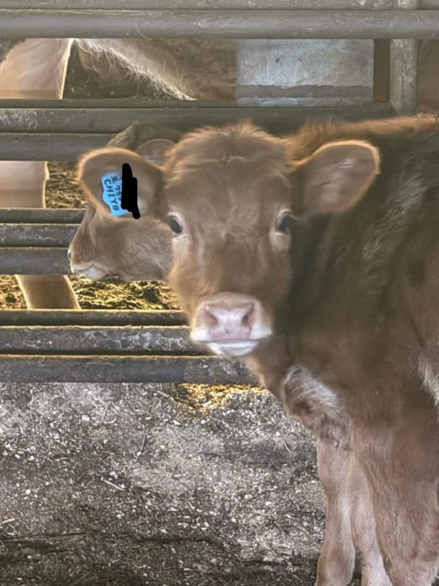
얘는 아직 작은 스몰라이브이다
하퍼정도라고 보면됨
이름도 내가 지어줌 이름은 치요다
귀표도 내가 쓴걸로 달아놨다
한우주제에 요새 유행하는 하이랜더 소를 닮아서 내가 애정하는 친구 중 하나다
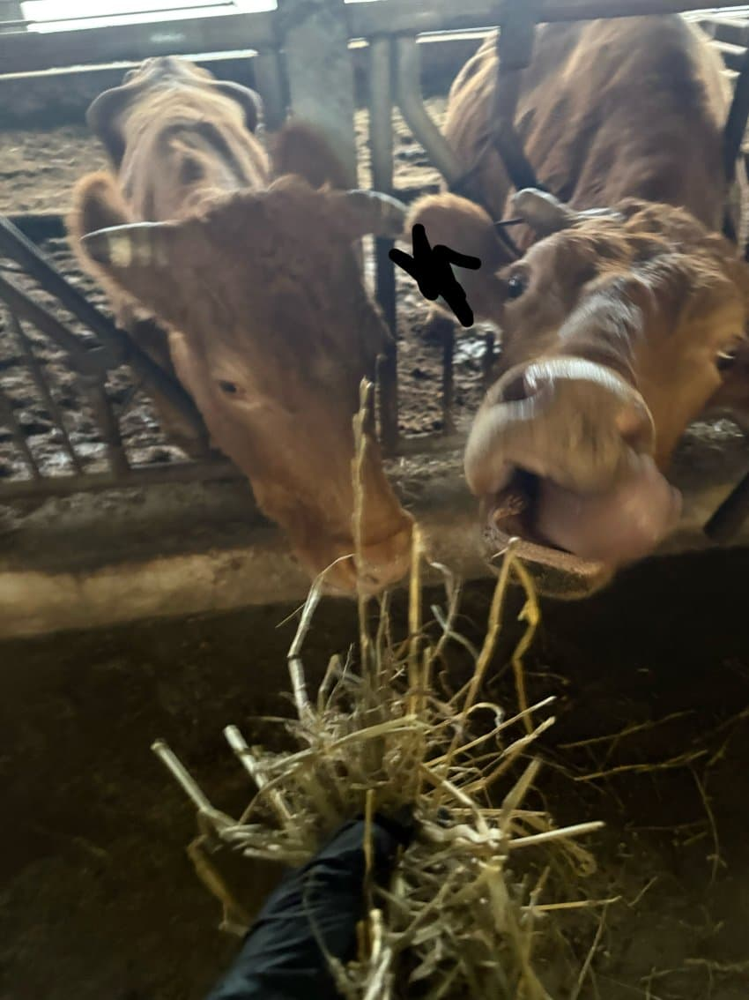
장비를 장착하고 바닥이 남은 풀떼기를 준다
소들은 풀을 존나좋아해서 이것만 들고다니면
아이돌… 아니 소이돌이 될수있다 모두가 나에게 시선집중함
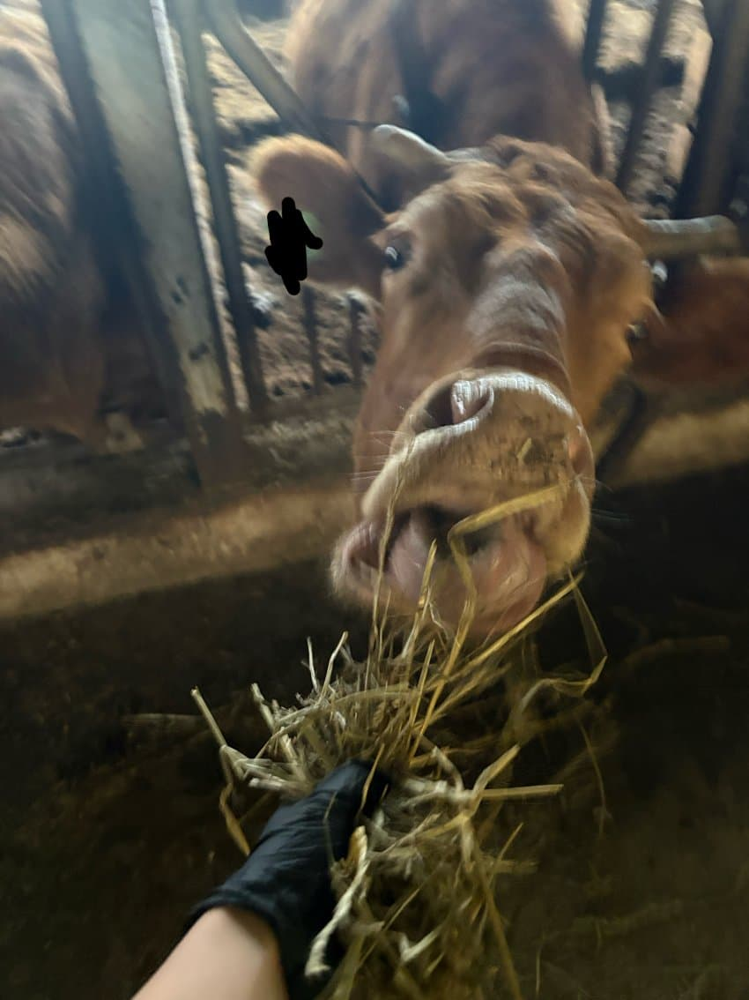
역동적이다
(쥐주의)
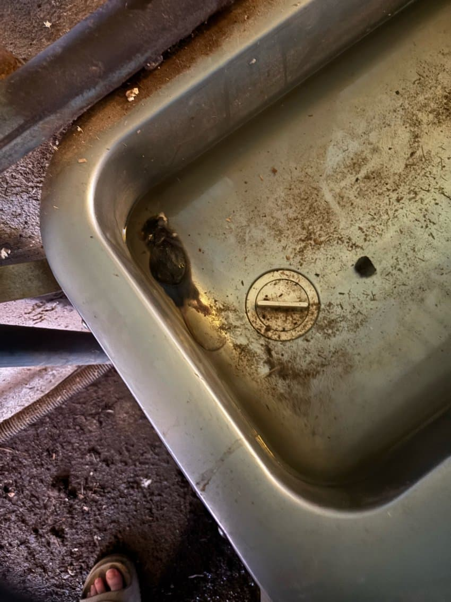
하여튼 오늘은 물통을 닦아야되는데
첫물통부터 생쥐가 빠져있다
퍙갤이니까 모자이크는안햇다
내 발가락도 안잘랏다 걍 봐라
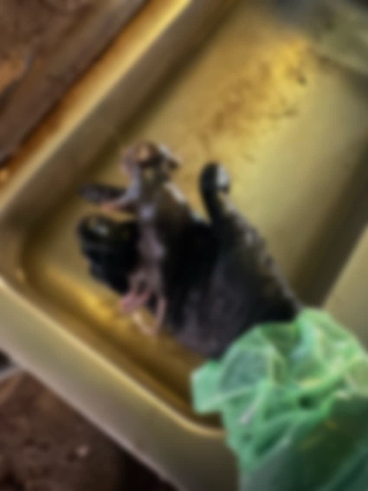
퍙갤럼답게 손으로 잡아준다
쥐가 빠져죽엇다 육수맛있엇겟네….
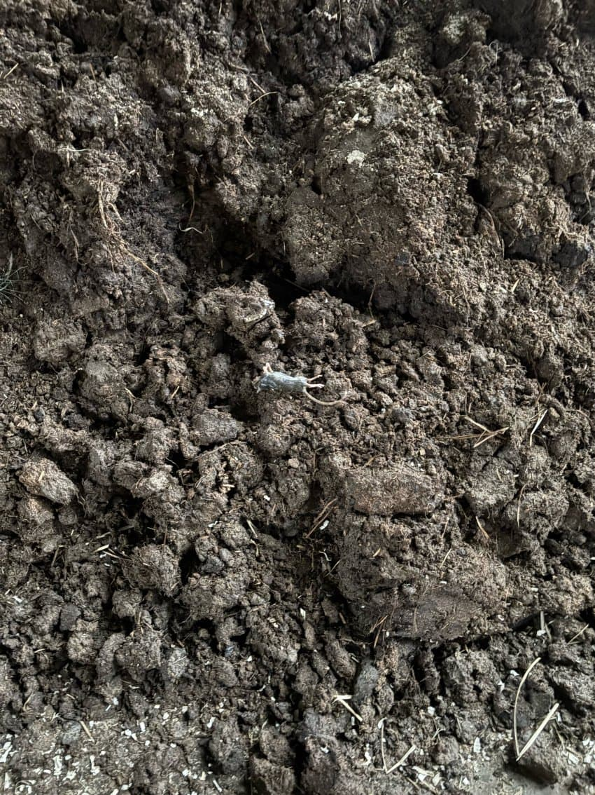
퇴비사이에 던져주면 미션클리어이다
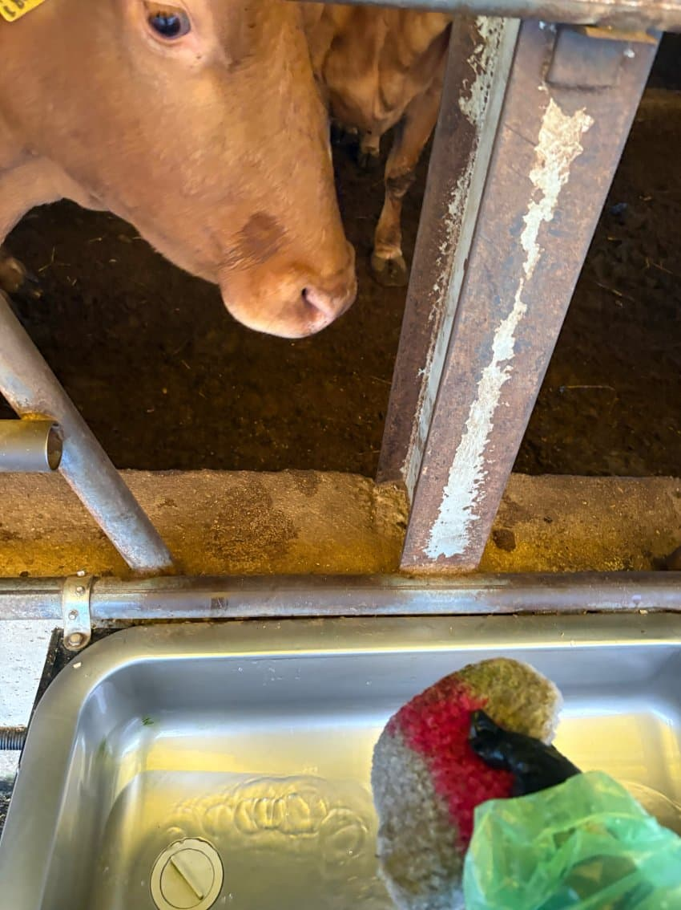
물통을 닦다보면 이렇게 소들이 관심을 많이준다
원래 소는 호기심이 많다고함
그래서 음수량 증가의 목적으로라도 물통을 닦아주면 좋다고한다
물통닦아주면 지들끼리 웅성웅성하다가 돌아가면서 물퍼먹음
아이돌이 되고싶었는데 꿈을 이루지못해 슬프다면
축사에서 일해보는걸 추천한다 ㅈㄴ재밌다
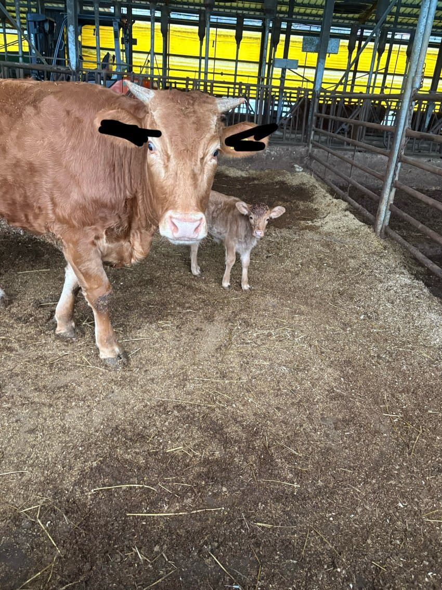
태어난지 얼마안된 핑키 송아지이다
머리에 피가 말라붙어있는 모습이 인상적이다
관용구인 머리에 피도 안 마른 새끼… 는 저 정수리에 있는 피가 마르지도 않을 만큼 어리다는 말이라고 한다
저 송아지는 다 말랐더라
축하한다.
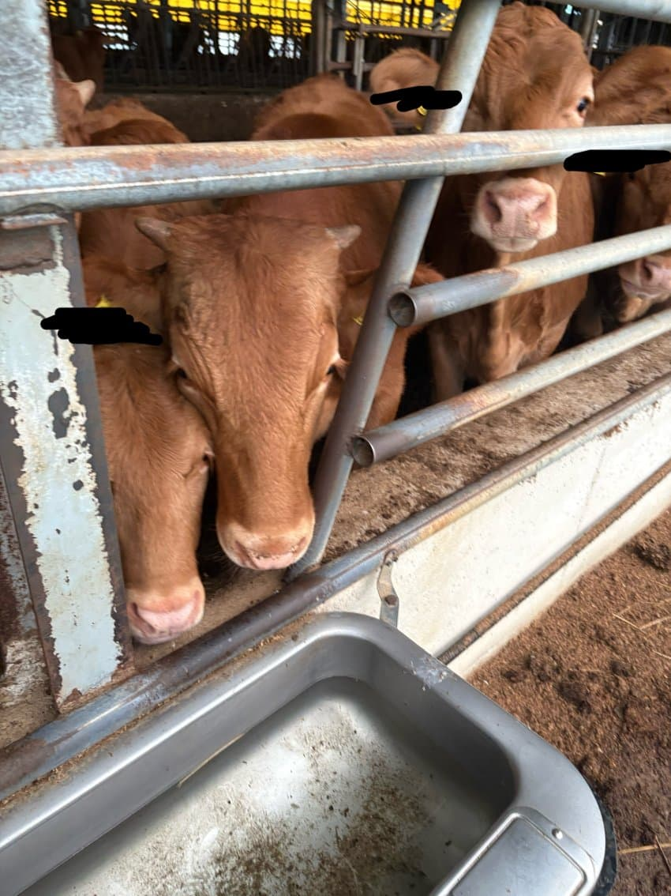
물통닦으려니까 물이 먹고싶었던건지 내가 궁금한건지
떼거지로 달려든다 이럴때마다 좀 무서움
아무튼 빅빅빅라이브 물통닦기는 여기서 마무리다
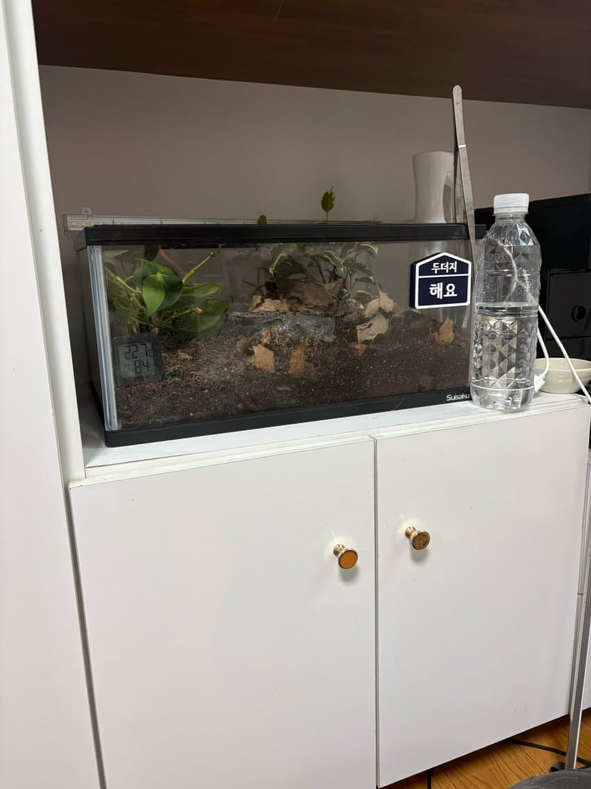
해요는 집이 바뀐지도 모르고 잘 살고있다(아마도)
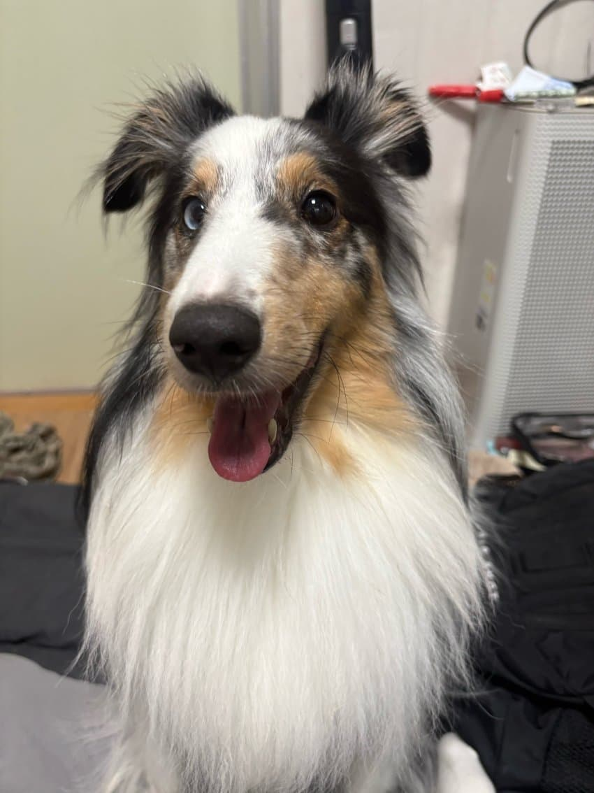
할일다했으니 얘랑 놀아야겟다
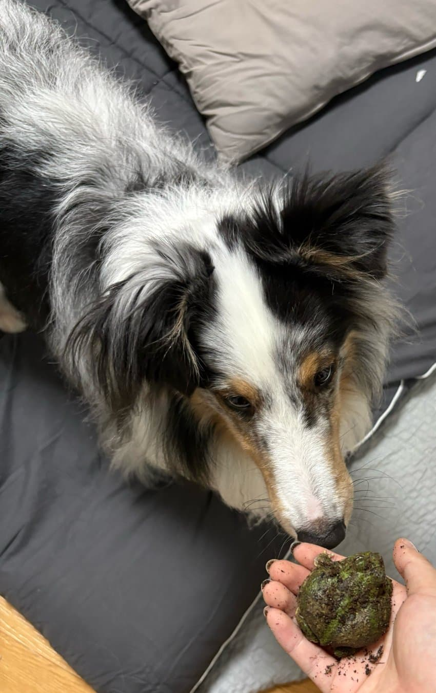
개구리를 보여줫는데 다행히 냄새 몇번맡고 관심이 별로 없다
그냥음신기하네 이러고 마는느낌
해요집 뚜껑ㅇ없는데 다행이다 먹진않을듯….
댓글
수집 당시 댓글 46개
am · 11.14 16:40:52
· 징베 · 11.14 16:41:56
육겁뱀레게펫게크레괙맨커먼벼디키우는남자 · 11.14 16:41:53
· 징베 · 11.14 16:42:09
뾰족거북 · 11.14 16:43:05
· 육겁뱀레게펫게크레괙맨커먼벼디키우는남자 · 11.14 16:43:37
· 징베 · 11.14 16:44:02
· 육겁뱀레게펫게크레괙맨커먼벼디키우는남자 · 11.14 16:46:15
· 징베 · 11.14 16:46:48
· 뾰족거북 · 11.14 16:59:32
Since2007 · 11.14 16:48:17
· 징베 · 11.14 16:48:54
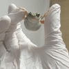
단델리온 · 11.14 16:49:59
· 징베 · 11.14 16:50:49
· 단델리온 · 11.14 16:58:13
· 징베 · 11.14 17:10:29
ㅇㅇ · 11.14 16:51:13
건실한
청년
· 징베 · 11.14 16:52:55
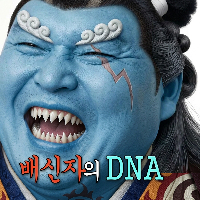
뽀맘 · 11.14 17:00:34
뽀맘 · 11.14 17:00:54
· 징베 · 11.14 17:10:47
ㅇㅇ · 11.14 17:12:43
· 징베 · 11.14 17:13:09
· ㅇㅇ · 11.14 17:13:38
· 징베 · 11.14 17:14:01
· 징베 · 11.14 17:14:22
· ㅇㅇ · 11.14 17:14:27
am · 11.14 17:39:25
김루루춘식 · 11.14 17:42:26
· 징베 · 11.14 18:40:16
바보쥐 · 11.14 18:09:17
· 징베 · 11.14 18:40:23
아기별집사 · 11.14 18:59:31
여울집사 · 11.14 19:19:40
rouge1 · 11.14 19:54:02
파갤러1 · 11.15 19:11:05
ㅇㅇ · 11.18 19:56:05
봇치쟝 · 11.18 19:56:17
악의꽃 · 11.18 19:56:29
하기베 · 11.18 19:56:52
아oㅣ스크림 · 11.18 19:56:55
ㅇㅇ · 11.18 19:57:06
Lf7f · 11.18 19:57:49
MR4오너 · 11.18 19:58:59
ㅇㅇ · 11.18 20:00:28
ㅇㅇ · 11.18 20:01:04